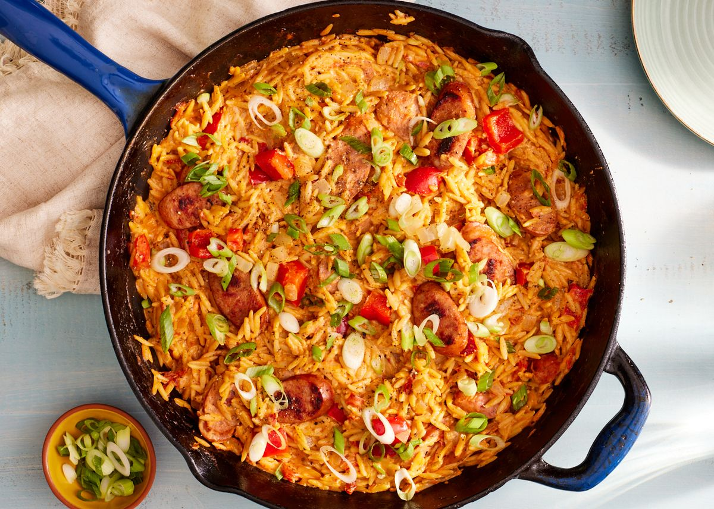

Cajun Orzo

Description
A dish this easy and good doesn't come along everyday. It's creamy and spicy with all of the comfort and ease you crave for a weeknight dinner. It comes together in just about 30 minutes and the cleanup is even faster, which means you can make this even on those night you feel you have no time to make a satisfying dinner.
Ingredients
1 tbsp. extra-virgin olive oil
1 small yellow onion, chopped
2 cloves garlic, minced
12 oz. andouille sausage, sliced
8 oz. orzo
1 (14-oz.) can fire roasted diced tomatoes
Steps
- In a large deep skillet over medium heat, heat oil. Add onion and pepper and cook until soft, 5 minutes. Add garlic and cook until fragrant, 1 minute more. Add sausage and cook until warmed through and golden, about 2 minutes.
- Add orzo and stir to toast for 1 minute. Add diced tomatoes, broth, and cajun seasoning. Season with salt and pepper. Bring to a boil, then reduce heat and simmer until orzo is cooked through and tender, about 10 minutes, stirring occasionally.
- Add cream cheese and stir until melted, then stir in green onions.